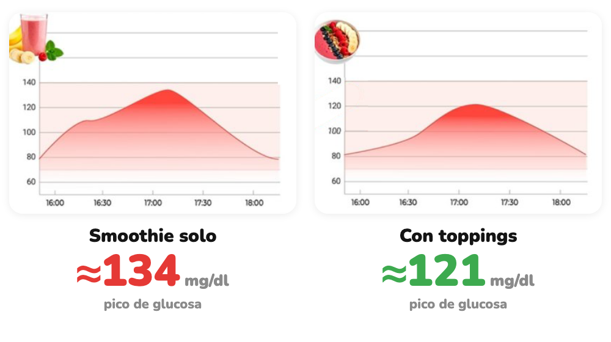

Cómo afecta
Mismo smoothie. Distinta curva.
Lo que le pones encima cambia tu glucosa.
Desliza →
Hacemos visible lo invisible
Lo que le pones encima cambia tu glucosa.
Desliza →

Curvas reales de una Viber; picos leídos en la gráfica. La respuesta puede variar entre personas.
Añade fibra, proteína y grasas saludables para una curva más estable.
Desliza →
glucovibes.com